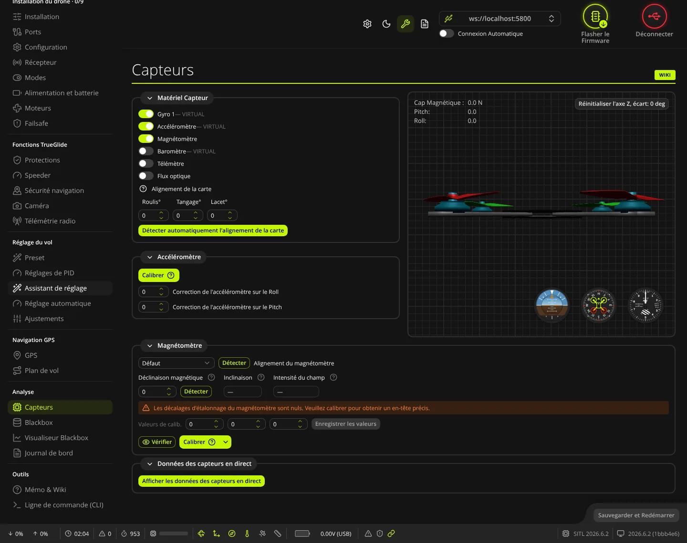
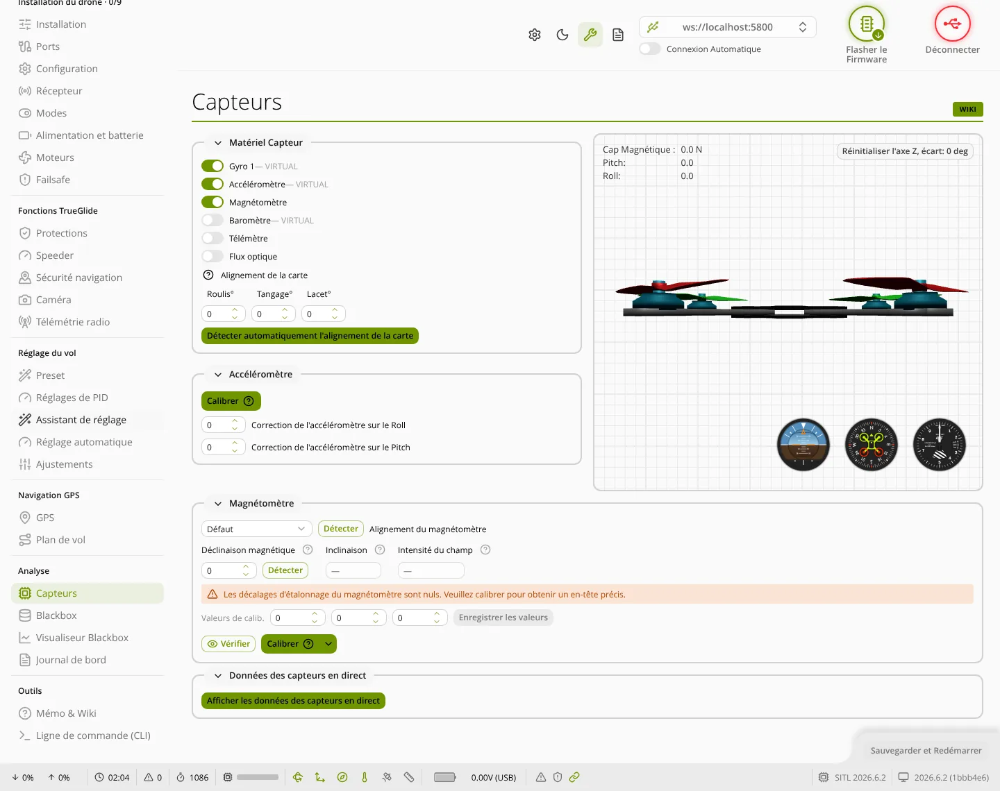

TRUE
TRUECapteurs
L'onglet Capteurs (groupe « Analyse ») sert à choisir les capteurs utilisés par la carte, à régler l'orientation de la carte et du magnétomètre, à calibrer l'accéléromètre et le magnétomètre, et à regarder les mesures en direct.


Matériel Capteur
- Gyro 1, Gyro 2… (firmware récent) : un interrupteur par gyroscope détecté, avec son nom de puce. Au moins un gyroscope doit rester activé : le logiciel refuse de couper le dernier. Sur un firmware ancien, un menu GYRO/ACCEL (Premier, Deuxième, Les deux) le remplace.
- Accéléromètre, Magnétomètre, Baromètre : interrupteurs, avec le nom de la puce détectée.
- Télémètre et Flux optique : interrupteur, puis choix du modèle dans un menu une fois activé (affichés seulement si le firmware en propose).
- Alignement de la carte : Roulis°, Tangage°, Lacet°, en degrés. À changer seulement si la carte n'est pas montée flèche vers l'avant, à plat.
- Détecter automatiquement l'alignement de la carte : assistant guidé (drone à plat, nez incliné vers le bas, côté droit incliné vers le bas, rotation d'environ 45° en lacet). Il propose un alignement à Appliquer. Grisé sans accéléromètre ou si l'accéléromètre n'est pas calibré.
Vue 3D et instruments
- Le drone en 3D suit l'attitude mesurée par la carte. En haut à gauche : Cap Magnétique (ou Lacet (Yaw) sans magnétomètre), Pitch et Roll, en degrés.
- Réinitialiser l'axe Z, écart : remet le cap de la vue 3D face à vous. Cela ne change que l'affichage, rien n'est envoyé à la carte.
- Instruments en bas à droite : horizon artificiel, cap, et altimètre si un baromètre est présent.
Accéléromètre
- Posez le drone bien à plat et immobile.
- Cliquez sur Calibrer. Le bouton affiche « Calibrage » pendant la mesure, puis le journal du logiciel indique la fin.
- Un bandeau orange « L'accéléromètre n'a pas été calibré » s'affiche tant que la carte signale ce défaut.
- Correction de l'accéléromètre sur le Roll et sur le Pitch : petit décalage pour corriger une dérive en mode ANGLE, de -300 à 300.
Magnétomètre
Ce cadre n'apparaît que si la carte a un magnétomètre actif.
- Alignement du magnétomètre : orientation du magnétomètre (souvent dans le module GPS). Personnalisé fait apparaître trois angles. Le bouton Détecter à côté mesure l'orientation pendant que vous inclinez le drone dans tous les sens, puis propose un résultat à Appliquer.
- Déclinaison magnétique : écart entre le nord magnétique et le nord géographique, en degrés. Le bouton Détecter la calcule d'après la position du GPS s'il a un fix ; sinon, après votre accord, d'après l'adresse IP (service tiers ipapi.co).
- Inclinaison (degrés) et Intensité du champ (nT) : valeurs calculées pour votre position, en lecture seule.
- Valeurs de calib. : décalages X, Y, Z enregistrés dans la carte, modifiables à la main puis Enregistrer les valeurs. S'ils valent tous 0, un bandeau demande de calibrer.
- Vérifier : affiche les mesures en nuage de points pour contrôler une calibration existante (posez le drone à plat, nez vers un point cardinal connu).
Calibrer le magnétomètre
Faites-le loin des objets métalliques et des câbles électriques. Le bouton Calibrer lance la calibration guidée ; la flèche à côté propose les autres méthodes :
| Méthode | Déroulement |
|---|---|
| Calib. client (guidée) (bouton Calibrer) | 60 secondes, 6 étapes affichées : à plat, sur le dos, nez en haut, nez en bas, côté gauche, côté droit, avec un tour complet en lacet à chaque fois. Puis Enregistrer la calibration. |
| Calib du client (Guidé) | Rotation libre dans toutes les directions ; le logiciel calcule les décalages et en donne la qualité. Puis Enregistrer la calibration. |
| Calib. complète (alignement auto) | 8 étapes guidées, avec 20 zones à couvrir. Calculer donne l'alignement et les décalages ; ensuite Appliquer (enregistre et redémarre), Copier le CLI (commandes à coller dans la CLI) ou Exporter le modèle. |
| Calib Firmware (Legacy) | 30 secondes de rotation libre ; la carte enregistre elle-même les valeurs à la fin. |
Pendant la calibration, une vue 3D montre les points mesurés, avec quatre affichages au choix (nuage de points, carte de chaleur, triple projection, densité polaire). Effacer repart de zéro, Annuler abandonne.
Données des capteurs en direct
Cliquez sur Afficher les données des capteurs en direct pour ouvrir les graphiques ; le carré rouge du titre les arrête.
- Interrupteurs : Gyroscope (deg/s), Accéléromètre (g), Magnétomètre, Altitude (mètres), Sonar (cm), Debug. Debug n'est actif que si un mode debug est choisi dans l'onglet Blackbox ; son nom s'affiche à côté.
- Tout actualiser : cadence de tous les graphiques, de 10 ms à 1000 ms.
- Sur chaque graphique : Rafraîchissement et Echelle (pour le debug, Auto suit les valeurs).
Sauvegarder et Redémarrer
Le bouton du bas devient actif dès qu'un réglage a changé (capteurs, alignements, corrections de l'accéléromètre, déclinaison). Il envoie tout à la carte, l'enregistre et la redémarre.